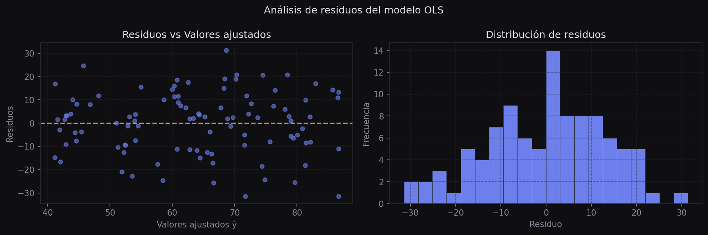
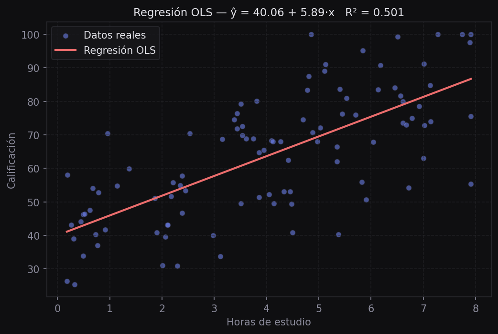

Regresión con Statsmodels
Implementación de OLS mediante statsmodels. A diferencia de la construcción manual, esta biblioteca produce un reporte estadístico completo: coeficientes, errores estándar, p-valores, R² e intervalos de confianza.
Introducción
La implementación manual construida en el módulo anterior estima los parámetros pero no provee información sobre su significancia estadística. Statsmodels aborda la regresión como un problema de inferencia: además de los estimadores, entrega toda la información necesaria para validar el modelo bajo los supuestos de OLS.
import pandas as pd
import numpy as np
import statsmodels.api as sm
import matplotlib.pyplot as plt
df = pd.read_csv("data/csvs/examenes.csv").sample(100, random_state=1)OLS con statsmodels
El flujo básico es: definir las variables, crear el modelo y ajustarlo:
# Variable independiente (matriz X)
X = np.array(df[["study_hours"]])
# Para agregar intercepto explícito:
# X = sm.add_constant(X)
# Variable dependiente
y = np.array(df["exam_score"])
# Crear y ajustar el modelo
model = sm.OLS(y, X)
result = model.fit()
# Ver el reporte completo
print(result.summary())El output de result.summary() contiene toda la información del modelo. A continuación se explica cada sección.
Interpretación del summary
El summary se divide en tres bloques. Este es un ejemplo real con el dataset de exámenes:
OLS Regression Results
===========================================================
Dep. Variable: y R-squared: 0.886
Model: OLS Adj. R-squared: 0.885
Method: Least Squares F-statistic: 768.8
Date: Sat, 28 Feb 2026 Prob (F-statistic): 1.82e-48
===========================================================
coef std err t P>|t|
-----------------------------------------------------------
x1 13.5268 0.488 27.728 0.000
===========================================================
Omnibus: 1.114 Durbin-Watson: 1.549
Prob(Omnibus): 0.573 Jarque-Bera (JB): 1.094
===========================================================R² y ajuste global
| Campo | Significado |
|---|---|
| R-squared | Fracción de la varianza en y explicada por el modelo. 0.886 = 88.6% |
| Adj. R-squared | R² penalizado por el número de variables. Más justo para comparar modelos |
| F-statistic | Prueba de que al menos un coeficiente es diferente de cero |
| Prob (F-statistic) | P-valor de la prueba F. Muy pequeño = el modelo como un todo es significativo |
Coeficientes
| Campo | Significado |
|---|---|
| coef | Valor estimado del parámetro. Aquí m = 13.53: cada hora de estudio suma ~13.5 puntos |
| std err | Error estándar del coeficiente — qué tan precisa es la estimación |
| t | Estadístico t = coef / std_err. Mide cuántas desviaciones estándar está el coeficiente de cero |
| [0.025 0.975] | Intervalo de confianza del 95% para el coeficiente |
P-valor y significancia estadística
El p-valor (P>|t|) responde: si el coeficiente fuera realmente cero, ¿qué tan probable sería observar este valor o uno más extremo por azar?
Si P>|t| < 0.05, el coeficiente es estadísticamente significativo al nivel del 5% — es decir, rechazamos la hipótesis de que ese coeficiente es cero. Un valor de 0.000 indica significancia muy alta.
Análisis de residuos
El residuo de cada observación es la diferencia entre el valor real y el predicho por el modelo:
Los residuos son clave para diagnosticar si el modelo es adecuado.
Supuestos del modelo lineal
La regresión lineal tiene supuestos que deben cumplirse para que la inferencia sea válida:
- Linealidad: la relación entre x e y es lineal
- Independencia: los residuos son independientes entre sí
- Homocedasticidad: la varianza de los residuos es constante para todos los valores de x
- Normalidad: los residuos siguen una distribución aproximadamente normal
Gráficas de diagnóstico
X = np.array(df[["study_hours"]])
y = np.array(df["exam_score"])
result = sm.OLS(y, X).fit()
# Calcular residuos
y_hat = result.predict(X)
residuos = y - y_hat
fig, axes = plt.subplots(1, 2, figsize=(11, 4))
# 1. Residuos vs valores predichos
axes[0].scatter(y_hat, residuos, alpha=0.6, s=20)
axes[0].axhline(0, color="#6c7fea", linewidth=1.2)
axes[0].set_xlabel("Valores predichos")
axes[0].set_ylabel("Residuos")
axes[0].set_title("Residuos vs Predichos")
axes[0].grid(True, alpha=0.2)
# 2. Distribución de residuos
axes[1].hist(residuos, bins=20, edgecolor="none", alpha=0.8)
axes[1].set_xlabel("Residuo")
axes[1].set_ylabel("Frecuencia")
axes[1].set_title("Distribución de residuos")
plt.tight_layout()
plt.show()
Los residuos deben distribuirse aleatoriamente alrededor del cero, sin ningún patrón visible. Si hay una curva o un patrón en abanico, el modelo lineal no es adecuado para esos datos.
Predicción
# Predecir para un nuevo valor
nuevo_x = np.array([[5.0]]) # estudiante que estudia 5 horas
prediccion = result.predict(nuevo_x)
print(f"Calificación estimada: {prediccion[0]:.1f}")
# Visualizar el modelo ajustado
x_line = np.linspace(df["study_hours"].min(), df["study_hours"].max(), 100).reshape(-1, 1)
y_pred = result.predict(x_line)
fig, ax = plt.subplots(figsize=(7, 5))
ax.scatter(X, y, alpha=0.5, s=20, label="Datos reales")
ax.plot(x_line, y_pred, color="#6c7fea", linewidth=2, label="Modelo OLS")
ax.set_xlabel("Horas de estudio")
ax.set_ylabel("Calificación")
ax.legend()
plt.show()
Ejemplo Agregar el intercepto explícito
Por defecto statsmodels no incluye el intercepto a menos que lo agreguemos manualmente con sm.add_constant():
X = np.array(df[["study_hours"]])
X = sm.add_constant(X) # agrega columna de unos para el término b
result = sm.OLS(y, X).fit()
print(result.summary())
# Ahora el summary muestra dos coeficientes: const (b) y x1 (m)Con el intercepto, los coeficientes tienen una interpretación más natural: b es la calificación esperada cuando el estudiante no estudia nada.